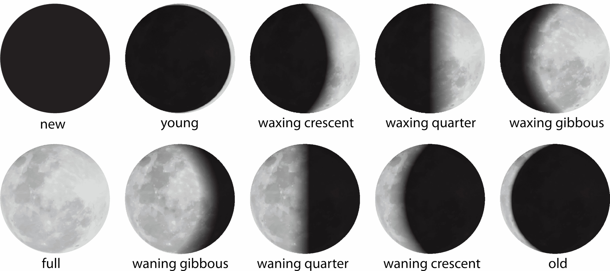

Parte 4 Fase lunar
Se necesita tener la fase lunar de cada registro, quizás lo óptimo sería analizar solo los registros nocturnos, pero en esta oportunidad agregaré este dato a todos los registros. Para obtener este dato se utilizará el paquete suncalc.
Cuando se aplica la función getMoonIllumination se obtienen los siguientes datos.
## date fraction phase angle
## 1 2024-05-04 0.2081266 0.849207 1.139817Donde:
- 0: Luna Nueva
- Luna Creciente
- 0.25: Cuarto Creciente
- Luna Gibosa Creciente
- 0.5: Luna Llena
- Luna Gibosa Menguante
- 0.75: Cuarto Menguante
- Luna Menguante

4.1 Fase lunar de cada registro
datos %>%
mutate(fase_lunar = round(getMoonIllumination(as_date(datetime))$phase, 2)) %>%
head() %>%
paged_table()4.2 Registros nocturnos
Para analizar los patrones de actividad utilizando las fases lunares, creo que es necesario saber qué registros son nocturnos. Para esto, al igual que CITAR Alexandra Tick Tack, delimitaron los registros nocturnos aquellos entre el final del atardecer y comienzo del amanecer.